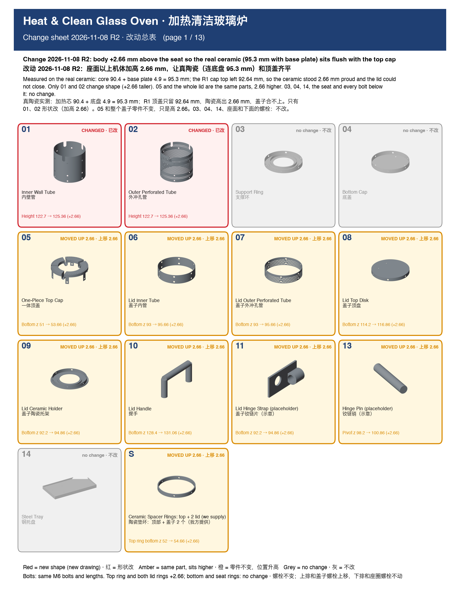
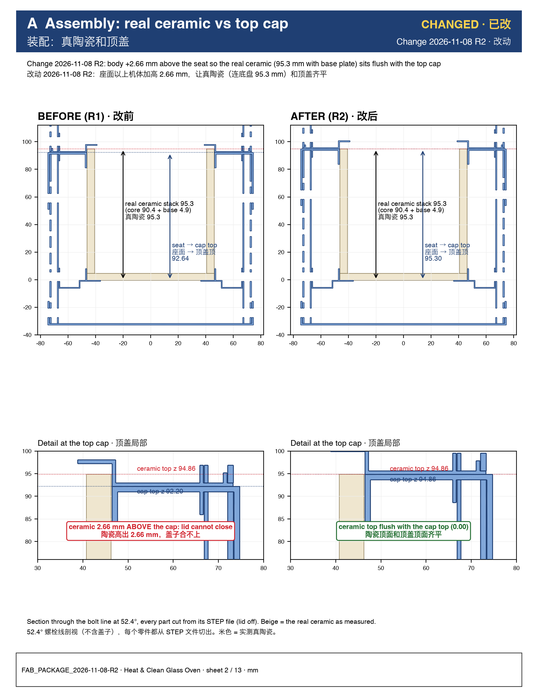
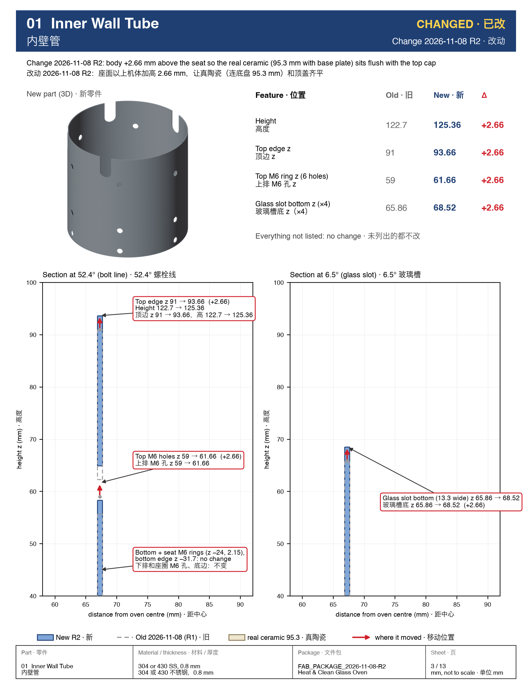
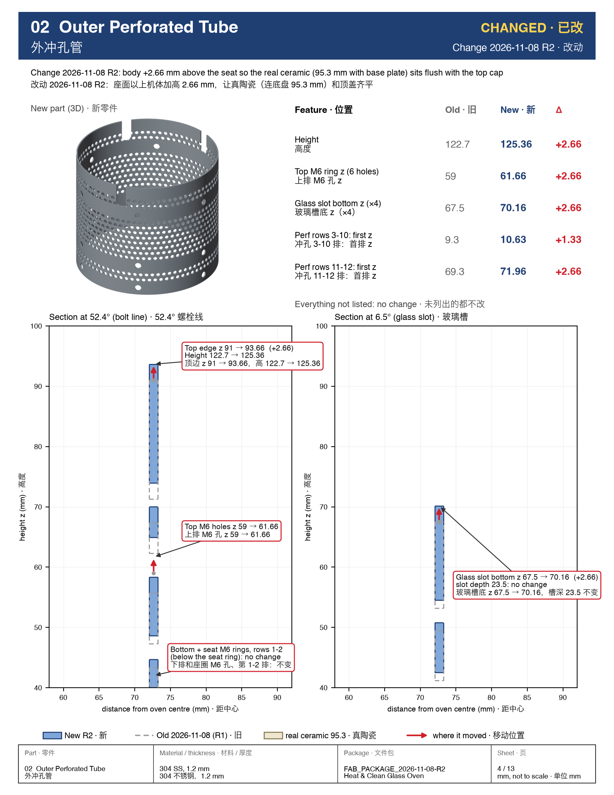
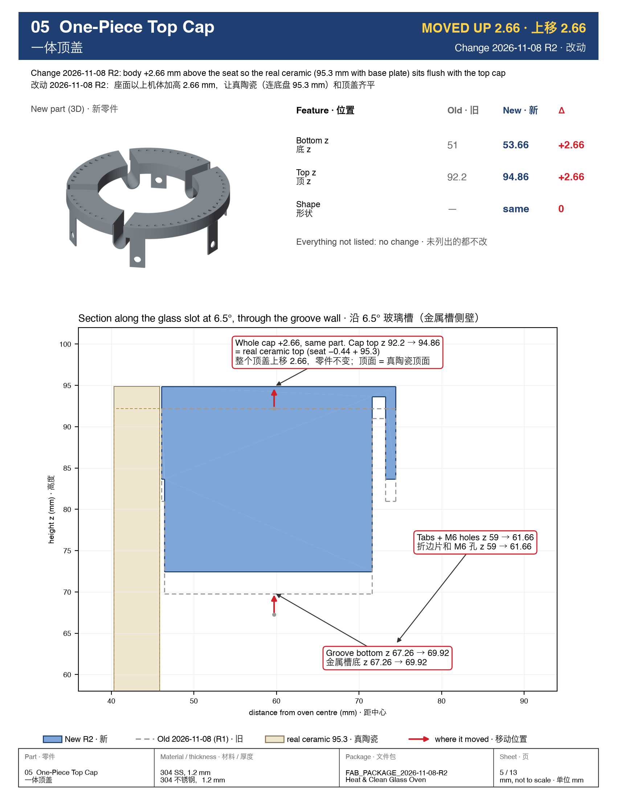
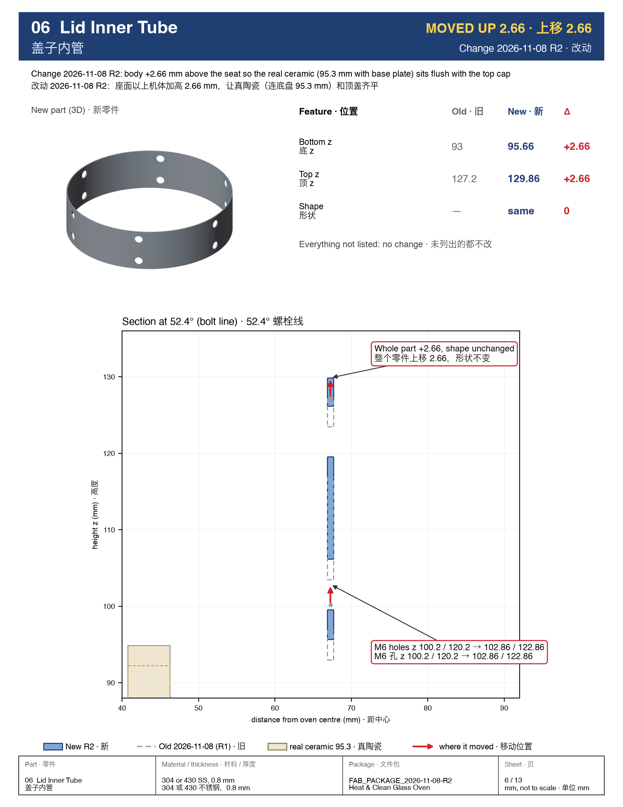
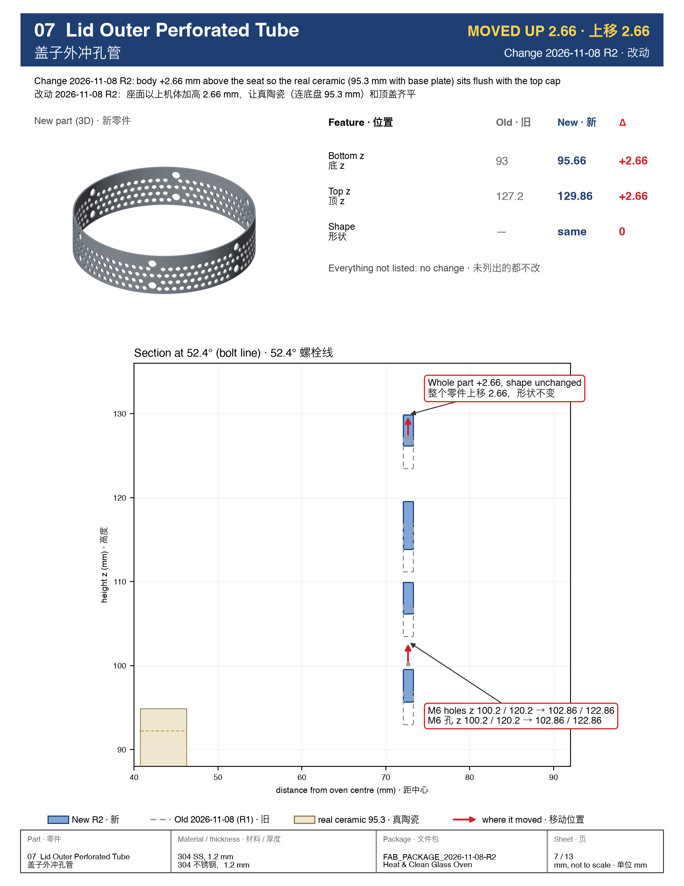
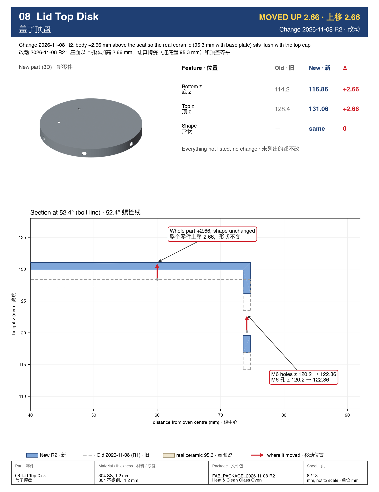
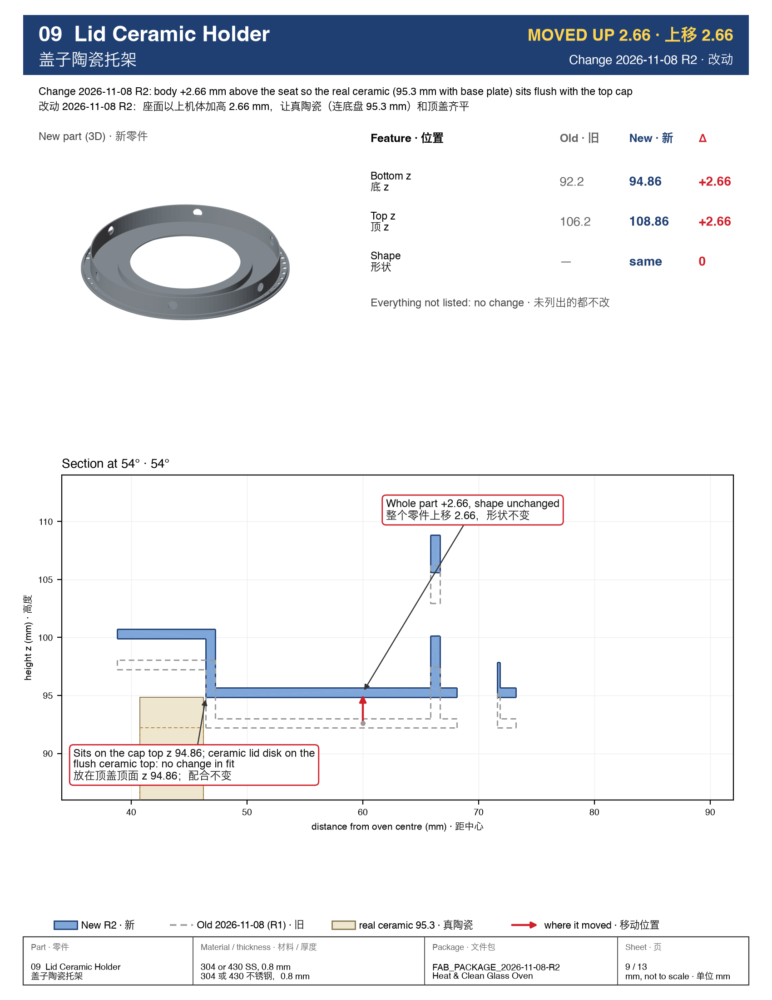
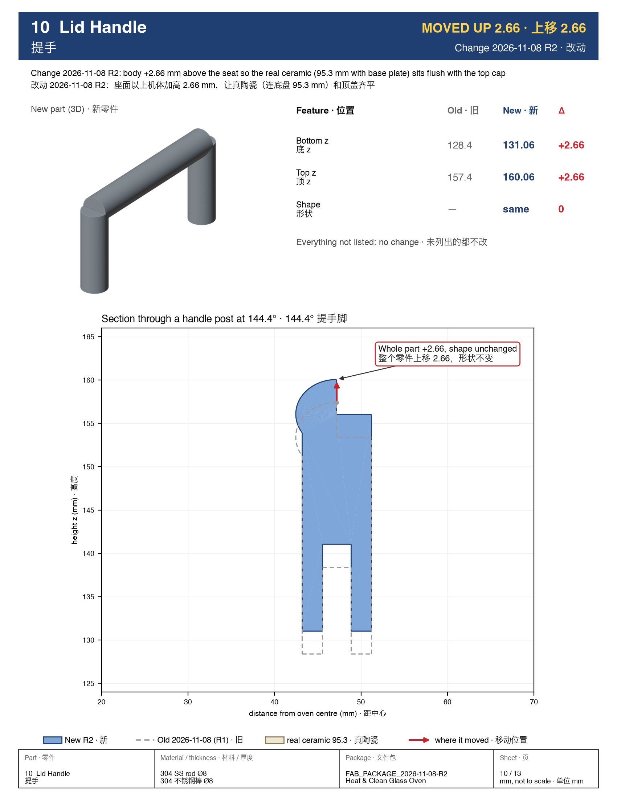
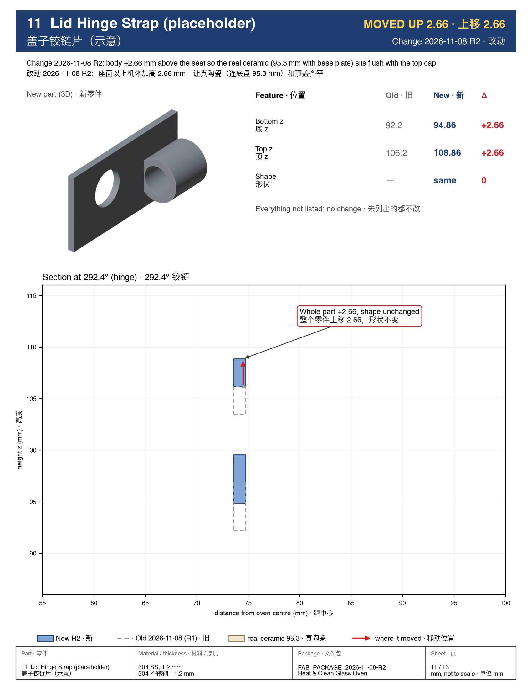
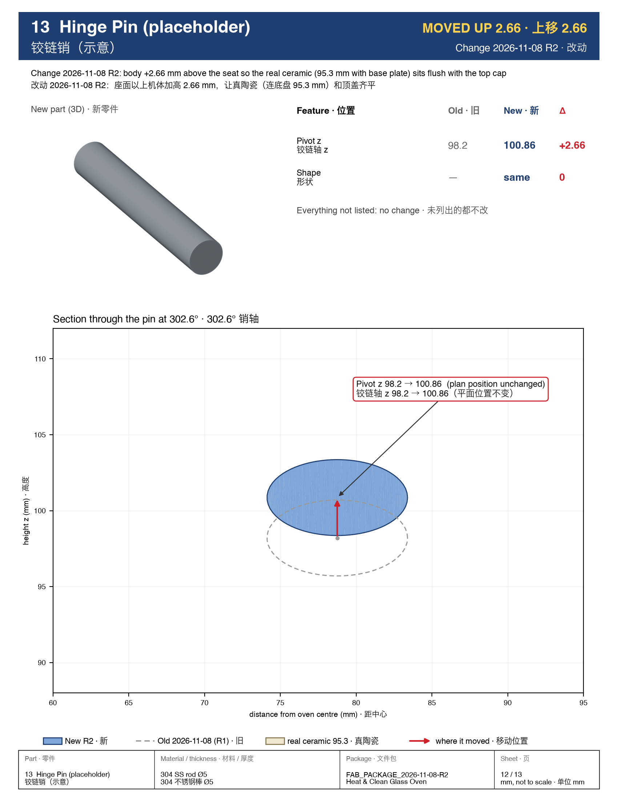
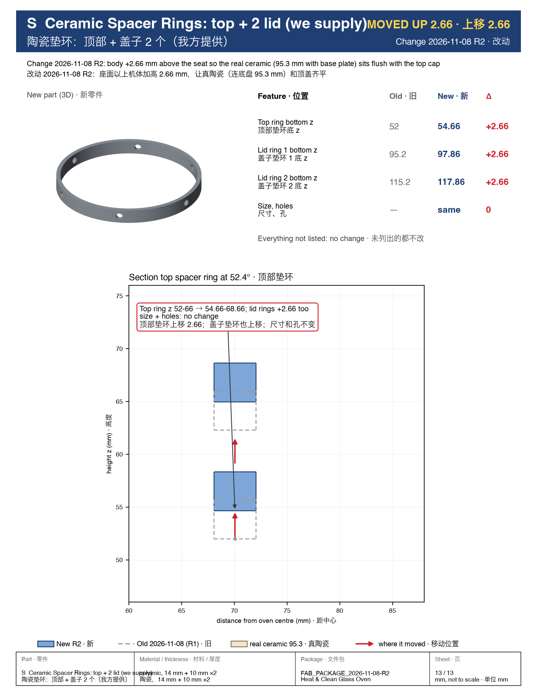
Change 2026-11-08 R2: body +2.66 mm above the seat so the real ceramic (95.3 mm with base plate) sits flush with the top cap
改动 2026-11-08 R2：座面以上机体加高 2.66 mm，让真陶瓷（连底盘 95.3 mm）和顶盖齐平
Measured on the real ceramic: core 90.4 + base plate 4.9 = 95.3 mm; the R1 cap top left 92.64 mm, so the ceramic stood 2.66 mm proud and the lid could not close. Only 01 and 02 change shape (+2.66 taller). 05 and the whole lid are the same parts, 2.66 higher. 03, 04, 14, the seat and every bolt below it: no change.
真陶瓷实测：加热芯 90.4 + 底盘 4.9 = 95.3 mm；R1 顶盖只留 92.64 mm，陶瓷高出 2.66 mm，盖子合不上。只有 01、02 形状改（加高 2.66）。05 和整个盖子零件不变，只是高 2.66。03、04、14、座面和下面的螺栓：不改。












